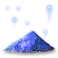
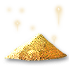
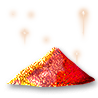
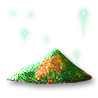

What it does
Cube the four essences, one each of Suffering, Hatred, Terror and Destruction, into a Token of Absolution. Right-click the Token to reset your stat and skill points. Akara also sells Tokens, for 100,000 gold.
Andariel or Duriel Token of Absolution
Token of Absolution

Twisted Essence of SufferingDuriel, Pain Unborn · Hell · 1 in 4Mephisto
Charged Essence of HatredUber Mephisto · Hell · 1 in 9Diablo
Burning Essence of TerrorDiablo, Terror Unborn · Hell · 1 in 9Baal
Festering Essence of DestructionUber Baal · Hell · 1 in 9One of each, cubedWhere they drop
Campaign bosses
- DurielTwisted Essence of Suffering · Duriel · Hell · 23.29%
- DurielTwisted Essence of Suffering · Duriel · Hell (quest kill) · 30.86%
- AndarielTwisted Essence of Suffering · Andariel · Hell · 15.87%
- MephistoCharged Essence of Hatred · Mephisto · Hell · 10.11%
- MephistoCharged Essence of Hatred · Mephisto · Hell (quest kill) · 8.202%
- DiabloBurning Essence of Terror · Diablo · Hell · 10.11%
- DiabloBurning Essence of Terror · Diablo · Hell (quest kill) · 8.202%
- BaalFestering Essence of Destruction · Baal · Hell · 10.14%
- BaalFestering Essence of Destruction · Baal · Hell (quest kill) · 8.222%
The Descent
- Echo of DurielTwisted Essence of Suffering · Echo of Duriel · Hell · 14.29%
- Echo of AndarielTwisted Essence of Suffering · Echo of Andariel · Hell · 6.472%
- Echo of DiabloBurning Essence of Terror · Echo of Diablo · Hell · 6.488%
- Echo of BaalFestering Essence of Destruction · Echo of Baal · Hell · 6.751%
Other bosses
- Duriel, Pain UnbornTwisted Essence of Suffering · Duriel, Pain Unborn · Hell · 25.48%
- Andariel, Anguish UnbornTwisted Essence of Suffering · Andariel, Anguish Unborn · Hell · 9.623%
- Mephisto, Hatred UnbornCharged Essence of Hatred · Mephisto, Hatred Unborn · Hell · 10.81%
- Diablo, Terror UnbornBurning Essence of Terror · Diablo, Terror Unborn · Hell · 10.8%
- Baal, Destruction UnbornFestering Essence of Destruction · Baal, Destruction Unborn · Hell · 10.81%
- Echo of the Veiled ProphetFestering Essence of Destruction · Echo of the Veiled Prophet · Hell · 9.225%
Other sources
- Terror Zone act bossesTwisted Essence of Suffering · Terror Zone act bosses · Hell · 24.08%
- Echo of Duriel (III)Twisted Essence of Suffering · Echo of Duriel (III) · Hell · 14.33%
- Echo of Andariel (II)Twisted Essence of Suffering · Echo of Andariel (II) · Hell · 6.487%
- Terror Zone act bossesCharged Essence of Hatred · Terror Zone act bosses · Hell · 10.39%
- Echo of Mephisto (I)Charged Essence of Hatred · Echo of Mephisto (I) · Hell · 6.754%
- Terror Zone act bossesBurning Essence of Terror · Terror Zone act bosses · Hell · 10.39%
- Terror Zone act bossesFestering Essence of Destruction · Terror Zone act bosses · Hell · 10.39%
Stone ubers
- Sevra the BoneboundFestering Essence of Destruction · Sevra the Bonebound · Hell · 9.631%
- Vardek the BoneboundFestering Essence of Destruction · Vardek the Bonebound · Hell · 7.343%
- Avatar of BelialFestering Essence of Destruction · Avatar of Belial · Hell · 7.305%
- Avatar of AzmodanFestering Essence of Destruction · Avatar of Azmodan · Hell · 7.242%
- Shade of BartucFestering Essence of Destruction · Shade of Bartuc · Hell · 6.987%
- Shade of Zoltun KulleFestering Essence of Destruction · Shade of Zoltun Kulle · Hell · 6.797%
Legacy ubers
- Uber MephistoCharged Essence of Hatred · Uber Mephisto · Hell · 11%
- Shade of DiabloBurning Essence of Terror · Shade of Diablo · Hell · 9.898%
- Uber DiabloBurning Essence of Terror · Uber Diablo · Hell · 9.885%
- Uber BaalFestering Essence of Destruction · Uber Baal · Hell · 11%